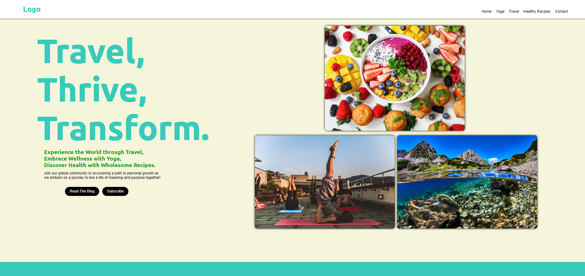

Keshon D. Bowman
| May 2024 | Desktop Support Specialist | Simpli.fi |
| Feb 2023 | Account Assistant | ACME Brick |
| June 2022 | Real Estate Agent | eXp Realty |
| January 2018 | Boatswain Mate 3rd Class | U.S Navy |

| Dec 2023 | Free Thinking Design Part 1 | This is an idea that was introduced using ChatGPT, a persona was made to start the background on a basic concept for "Sarah's Blog". |
| Feb 2024 | Product Card Challenge | Using HTML and CSS, we were able to gather a responsive feel through changing both pictures for the mobile and desktop version, the finished product is exciting and with more to come along the journey, we are excited to give you this design. |
| Jan 2024 | JavaScript Clock | Using vanillaJS 30 day Challenge, we were able to create a loop JavaScript clock that will move simultaneously as the user is viewing the design. |